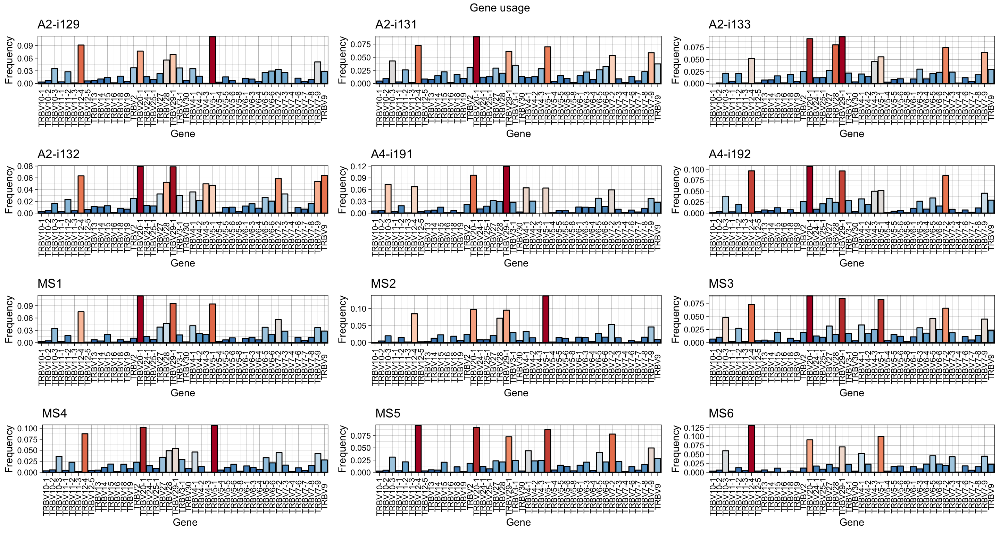
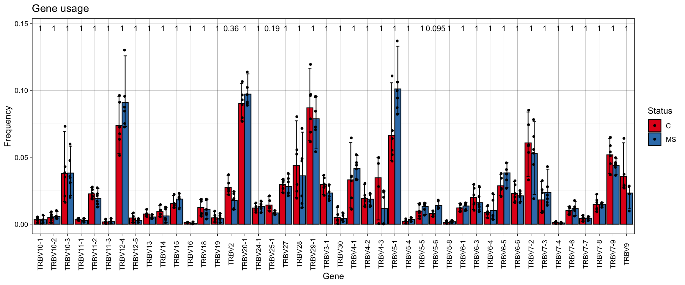
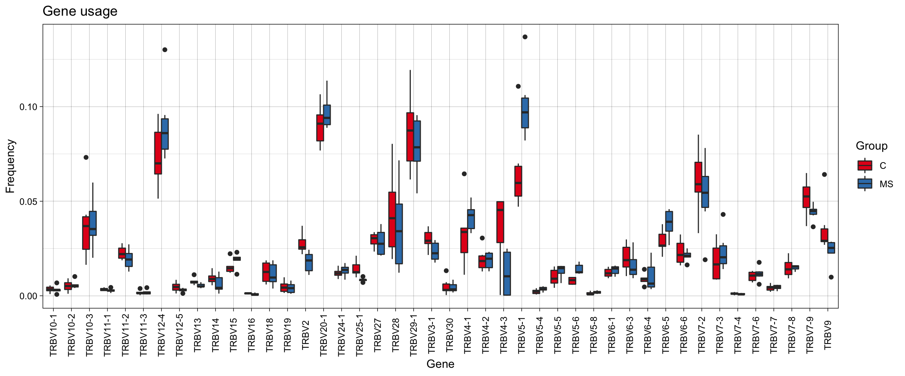
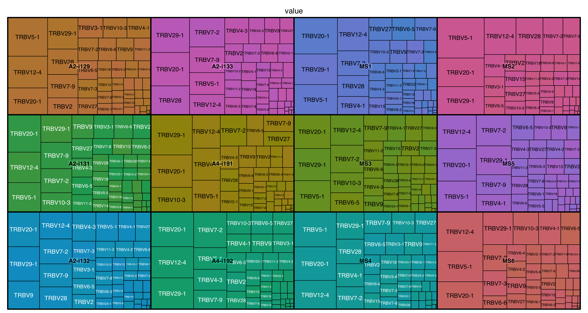
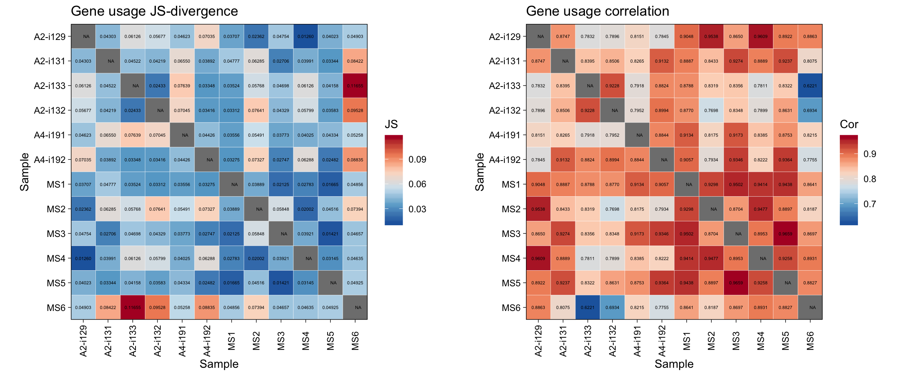
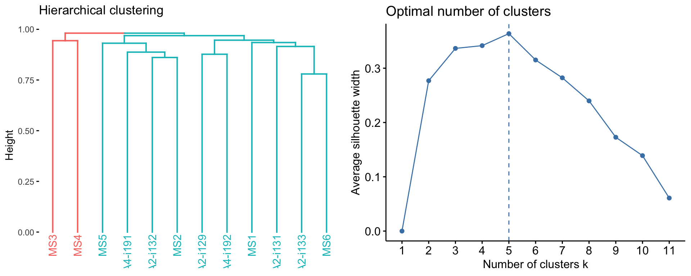
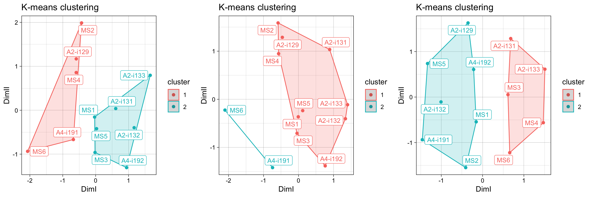
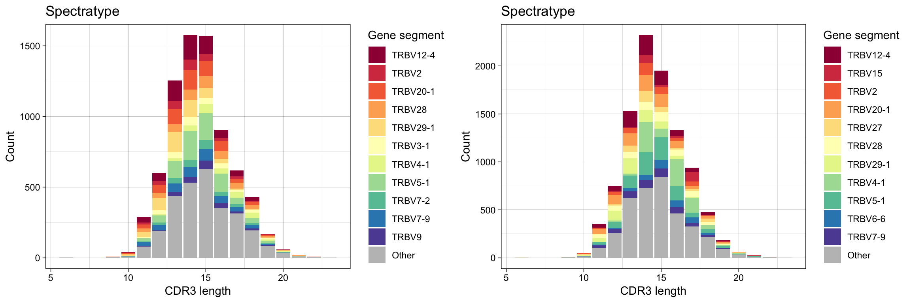

immunarch comes with a gene segments data table containing known gene segments for several species. In order to get the current statistics of genes, call the gene_stats() function:
## alias species ighd ighj ighv igij igkj igkv iglj iglv
## 1 bt BosTaurus 0 0 0 0 0 0 0 0
## 2 cd CamelusDromedarius 0 0 0 0 0 0 0 0
## 3 clf CanisLupusFamiliaris 0 0 0 0 0 0 0 0
## 4 dr DanioRerio 7 7 0 3 0 0 0 0
## 5 hs HomoSapiens 30 13 224 0 5 64 7 69
## 6 macmul MacacaMulatta 24 7 19 0 4 83 5 0
## 7 mmc MusMusculusCastaneus 0 0 0 0 0 4 0 0
## 8 mmd MusMusculusDomesticus 0 0 0 0 0 2 0 0
## 9 musmus MusMusculus 27 8 234 0 8 109 3 5
## 10 oa OrnithorhynchusAnatinus 3 10 0 0 0 0 0 0
## 11 oc OryctolagusCuniculus 10 11 39 0 8 26 2 20
## 12 om OncorhynchusMykiss 9 7 6 0 0 0 0 0
## 13 rn RattusNorvegicus 30 4 113 0 6 132 2 8
## 14 smth MusMusculusMolossinus 0 0 0 0 0 1 0 0
## 15 smth MusMusculusMusculus 0 0 0 0 0 1 0 0
## 16 smth MusSpretus 0 0 0 0 0 2 0 2
## 17 ss SusScrofa 5 5 15 0 8 19 4 14
## traj trav trbd trbj trbv trdd trdj trdv trgj trgv vprv
## 1 46 0 0 0 0 5 3 2 6 14 0
## 2 0 0 0 0 0 0 0 7 2 2 0
## 3 0 0 2 8 19 0 0 0 7 8 0
## 4 0 0 0 0 0 0 0 0 0 0 0
## 5 52 47 3 14 60 3 4 6 3 9 1
## 6 0 0 2 15 58 0 0 0 0 0 0
## 7 0 0 0 0 0 0 0 0 0 0 0
## 8 0 0 0 0 0 0 0 0 0 0 0
## 9 41 145 2 14 23 2 3 7 0 11 0
## 10 0 0 0 0 0 0 0 0 0 0 0
## 11 0 0 0 0 0 0 0 0 0 0 0
## 12 0 0 1 9 0 0 0 0 0 0 0
## 13 0 0 0 0 0 0 0 0 0 0 0
## 14 0 0 0 0 0 0 0 0 0 0 0
## 15 0 0 0 0 0 0 0 0 0 0 0
## 16 0 0 0 0 0 0 0 0 0 0 0
## 17 0 0 0 0 0 0 0 0 0 0 0To compute the distributions of genes, immunarch includes the geneUsage function. It receives a repertoire or a list of repertoires as input and genes and species for which you want to get the statistics. E.g., if you plan to use TRBV genes of Homo Sapiens, you need to use the hs.trbv string in the function, where hs comes from the alias column and trbv is the gene name. Of if you plan to use IGHV genes of Mus Musculus, you need to use musmus.ighv:
# Next four function calls are equal. "hs" is from the "alias" column.
imm_gu = geneUsage(immdata$data, "hs.trbv")
# imm_gu = geneUsage(immdata$data, "HomoSapiens.trbv")
# imm_gu = geneUsage(immdata$data, "hs.TRBV")
# imm_gu = geneUsage(immdata$data, "HomoSapiens.TRBV")
imm_gu## # A tibble: 48 x 13
## Names `A2-i129` `A2-i131` `A2-i133` `A2-i132` `A4-i191` `A4-i192` MS1
## <chr> <dbl> <dbl> <dbl> <dbl> <dbl> <dbl> <dbl>
## 1 TRBV… 54 69 8 34 35 20 29
## 2 TRBV… 264 320 154 128 429 256 217
## 3 TRBV… 29 22 33 20 22 18 16
## 4 TRBV… 208 193 153 181 110 130 107
## 5 TRBV… 10 15 8 30 2 9 5
## 6 TRBV… 682 541 376 495 396 640 470
## 7 TRBV… 46 63 9 46 20 19 8
## 8 TRBV… 50 59 52 87 33 47 45
## 9 TRBV… 79 109 55 80 44 37 25
## 10 TRBV… 105 166 115 98 88 81 125
## # … with 38 more rows, and 5 more variables: MS2 <dbl>, MS3 <dbl>,
## # MS4 <dbl>, MS5 <dbl>, MS6 <dbl>Gene distributions could be computed either using counts of individual clonotypes (.quant = "count") or not using them (.quant = NA).
In order to compute allele-level or family-level distributions, change the .type parameter.
Due to the ambiguity of gene alignments for some clonotypes, geneUsage has the following options to deal with ambiguous data:
.ambig = "exc" - filters out all clonotypes with ambiguous gene alignments.
.ambig = "inc" - includes all possible combinations of ambiguous gene alignments from the data. NOTE: ImmunoSEQ formats use non-standart gene segment names, so it is preferable to use this argument value with ImmunoSEQ formats. This argument is ON by default to ease the gene manipulation. Feel free to change it to "exc" in case of other data formats.
.ambig = "wei" - introduces weighted approach (divides by n (1/n) the frequency for each entry of the corresponding gene if there are n genes for a clonotype).
.ambig = "maj" - chooses only the first gene segment.
Parameter .norm controls whether immunarch will normalise the data to ensure the sum of all frequencies to be equal 1 or not.
You can visualise the histogram of gene usage in two different ways:
imm_gu = geneUsage(immdata$data, "hs.trbv", .norm = T, .ambig = "exc")
vis(imm_gu, .plot = "hist", .grid = T)## Warning: Connection is garbage-collected, use dbDisconnect() to avoid this.## Warning: Removed 1 rows containing missing values (position_stack).
## Warning: Removed 1 rows containing missing values (position_stack).
vis(imm_gu, .plot = "hist", .grid = F, .by = "Status", .meta = immdata$meta)
Another practical approach to the visualisation of group distributions are box plots:
vis(imm_gu, .by = "Status", .meta = immdata$meta, .plot = "box")
Sometimes tree maps could be used to reveal the differences in repertoires. They display the overall picture and the comparisons of related items, both at the same time, enabling intelligible exploration of the details:

To analyse the gene usage immunarch introduces the geneUsageAnalysis function. The .method parameter controls how the data is going to be preprocessed and analysed. geneUsageAnalysis includes following methods for preprocessing:
“js” - Jensen-Shannon Divergence.
“cor” - correlation.
“cosine” - cosine similarity.
“pca” - principal component analysis.
“mds” - multi-dimensional scaling.
“tsne” - t-Distributed Stochastic Neighbor Embedding.
And a few methods for the actual analysis:
“hclust” - clusters the data using hierarchical clustering.
“kmeans” - clusters the data using K-means.
“dbscan” - clusters the data using DBSCAN.
“permut” - permutation testing of differences between groups.
“anova” - computes ANOVA for each gene separately on data splitted to groups (without preprocessing). Results could be used with Tukey post-hoc test in order to detect significant differences among groups per gene.
“kruskall” - compute Kruskall for each gene separately on data splitted to groups (without preprocessing). Results could be used with Dunn test in order to detect significant differences between groups.
You can call several methods in a single line of code, which is probably the most powerful feature of the package. For instance, "js+hclust" first computes Jensen-Shannon divergence and then applies hierarchical clustering on the resulting distance matrix, whereas "anova" computes ANOVA on each gene separately after repertoires have been grouped:
imm_gu = geneUsage(immdata$data, "hs.trbv", .norm = T, .ambig = "exc")
imm_gu_js = geneUsageAnalysis(imm_gu, .method = "js", .verbose = F)
imm_gu_cor = geneUsageAnalysis(imm_gu, .method = "cor", .verbose = F)
gridExtra::grid.arrange(vis(imm_gu_js, .title = "Gene usage JS-divergence", .leg.title = "JS", .text.size=1.5), vis(imm_gu_cor, .title = "Gene usage correlation", .leg.title = "Cor", .text.size=1.5), ncol = 2)
Now let us visualise the output after both preprocessing and analysis:
imm_gu_js[is.na(imm_gu_js)] = 0
vis(geneUsageAnalysis(imm_gu, "cosine+hclust", .verbose = F))
#vis(geneUsageAnalysis(imm_gu, "js+dbscan", .verbose = F))On top of that you can add clustering:
imm_cl_pca = geneUsageAnalysis(imm_gu, "js+pca+kmeans", .verbose = F)
imm_cl_mds = geneUsageAnalysis(imm_gu, "js+mds+kmeans", .verbose = F)
imm_cl_tsne = geneUsageAnalysis(imm_gu, "js+tsne+kmeans", .perp = .01, .verbose = F)## Perplexity should be lower than K!grid.arrange(vis(imm_cl_pca, .plot = "clust"), vis(imm_cl_mds, .plot = "clust"), vis(imm_cl_tsne, .plot = "clust"), ncol = 3)
Spectratype is a useful way to represent distributions of genes per length. Parameter .quant controls the quantity that used to compute proportions of genes - either by clonotype (id) or by number of clones per clonotype (count)
p1 = vis(spectratype(immdata$data[[1]], .quant = "id", .col = "aa", .gene = "v"))
p2 = vis(spectratype(immdata$data[[1]], .quant = "count", .col = "aa", .gene = "v"))
grid.arrange(p1, p2, ncol = 2)